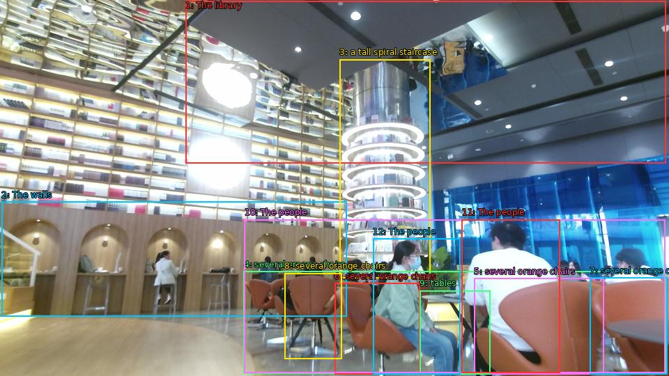

The image shows the interior of a modern library or bookstore. The library has a high ceiling with recessed lighting and large windows that let in natural light. The walls are made of wood and there are rows of bookshelves on the left side of the image. On the right side, there is a tall spiral staircase with a glass railing. In the center of the staircase, there are several orange chairs and tables with people sitting at them. The people in the image appear to be engaged in conversation and browsing the books. The overall atmosphere of the library is cozy and inviting.

Original · Caption raw · Grounding raw · Koordinate
Številke so lokalni ID regije. Dolge slikovne oznake so skrajšane; spodaj so celotne fraze. Napovedane regije se lahko prekrivajo ali opisujejo skupine.
| ID | Celotna fraza | bbox xyxy |
|---|---|---|
| 1 | The library | [266.3999938964844, 1.350000023841858, 955.6799926757812, 234.6300048828125] |
| 2 | The walls | [2.3999998569488525, 289.71002197265625, 497.7599792480469, 454.95001220703125] |
| 3 | a tall spiral staircase | [487.1999816894531, 85.05000305175781, 617.760009765625, 399.8700256347656] |
| 4 | several orange chairs | [349.91998291015625, 389.6100158691406, 956.6399536132812, 536.4900512695312] |
| 5 | several orange chairs | [680.1599731445312, 399.8700256347656, 866.3999633789062, 537.5700073242188] |
| 6 | several orange chairs | [480.47998046875, 406.8900146484375, 602.3999633789062, 537.030029296875] |
| 7 | several orange chairs | [846.239990234375, 398.7900085449219, 957.5999755859375, 537.030029296875] |
| 8 | several orange chairs | [408.47998046875, 392.3100280761719, 490.0799865722656, 515.4299926757812] |
| 9 | tables | [602.3999633789062, 417.1500244140625, 703.2000122070312, 537.030029296875] |
| 10 | The people | [350.8800048828125, 315.09002685546875, 954.719970703125, 535.4100341796875] |
| 11 | The people | [662.8800048828125, 315.09002685546875, 803.0399780273438, 535.9500122070312] |
| 12 | The people | [535.2000122070312, 342.6300048828125, 660.0, 537.030029296875] |